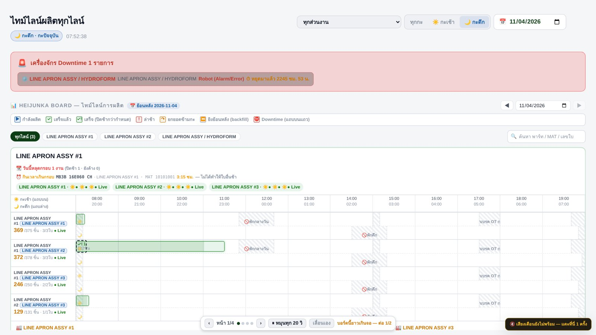
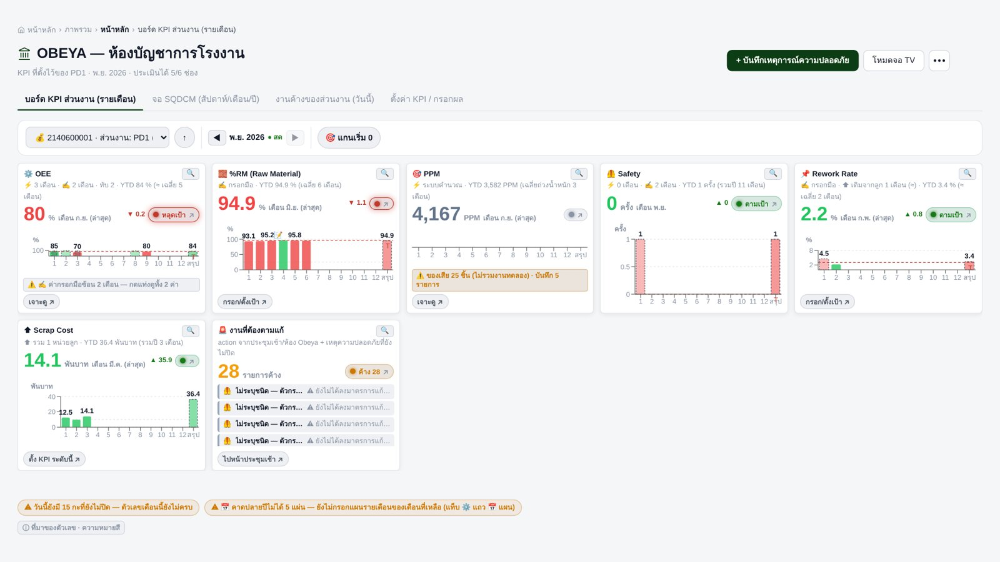
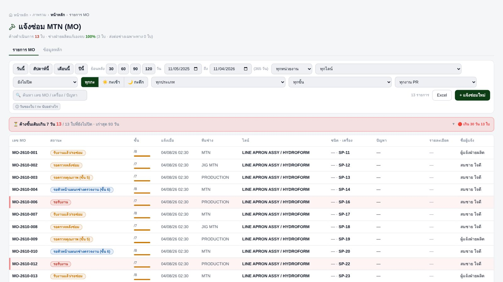
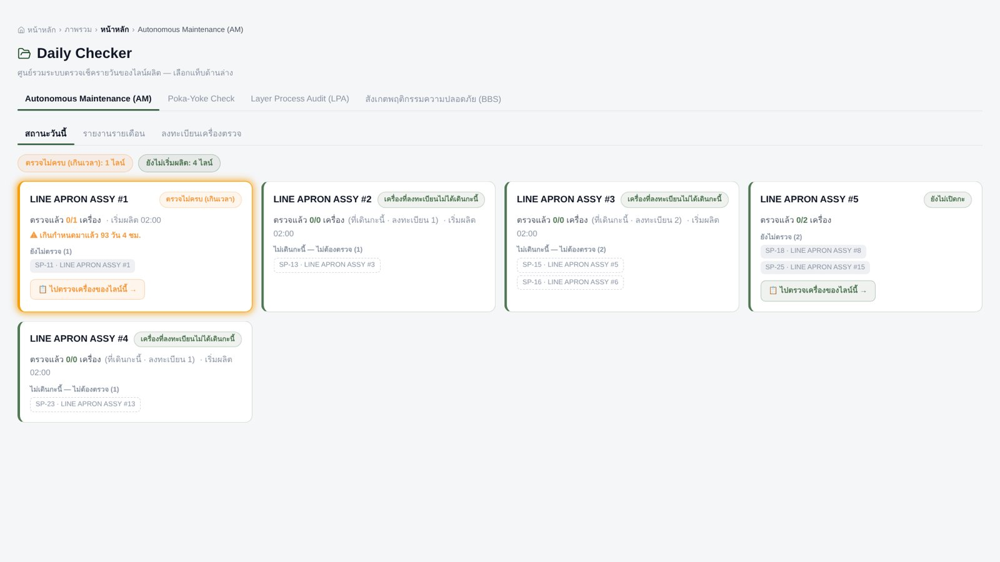

ป้ายกำกับตัวเลข: วัดจริง ดึงจากระบบโดยตรง · ประมาณการ คิดจากสมมติฐานที่เขียนไว้ ต้องยืนยันด้วยการจับเวลา · เชิงคุณภาพ สิ่งที่ทำได้แล้ว แต่ยังไม่มีตัวเลขเทียบก่อน/หลัง
ในเกือบ 2 เดือน ESM ขยายจากไลน์นำร่องไปเกือบทุกไลน์ จุดที่เห็นผลชัดที่สุดคือ เอกสารหน้างานหลักย้ายจากกระดาษเข้าระบบ แล้ว และเพราะข้อมูลอยู่ในระบบตั้งแต่ต้นทาง ประโยชน์จึงต่อยอดเป็น 3 ชั้น ได้แก่ งานเดินเร็วขึ้นเพราะไม่ต้องเดินส่งเอกสาร · ไม่ต้องคีย์กระดาษลง Excel แล้วทำกราฟเอง เพราะระบบวิเคราะห์ให้ · และ รู้ปัญหาทันทีผ่านการแจ้งเตือนและสรุปงานอัตโนมัติ รายงานนี้เรียงตามลำดับนั้น และปิดท้ายด้วยเรื่องที่ยังต้องแก้ เพื่อให้ตัวเลขชุดถัดไปดีขึ้นจริง
นับตาม "หน่วยของใบกระดาษจริง" ไม่ใช่จำนวนครั้งที่ตรวจ — ใบรายเดือน (เช็คชื่อ · AM · LPA · BBS · Poka-yoke) ใช้กี่วันก็ยังเป็น 1 แผ่นต่อเครื่องหรือต่อไลน์ ต่อกะ ต่อเดือน ส่วนใบที่ออกเป็นเรื่องๆ (MO · 4M · ใบงานประจำกะ · ใบ QA) นับใบละแผ่น
| เอกสาร (เดิมเป็นกระดาษ) | หน่วยของใบกระดาษ | ต.ค. แผ่น/เดือน | พ.ย. แผ่น/เดือน | พ.ย. ครั้งที่บันทึก (คีย์ Excel เดิม) |
|---|---|---|---|---|
| รายงานการผลิตประจำกะ | 1 แผ่น / ไลน์ / กะ | 783 | ~1,030 | ~1,030 |
| ใบตรวจคุณภาพ QA | 1 แผ่น / พาร์ท / กะ / รอบ | 139 | ~1,000 | ~1,000 |
| ใบแจ้งซ่อม MO | 1 แผ่น / เรื่อง | 809 | ~1,250 | ~1,250 |
| ใบ 4M Change (เฉพาะที่คนยื่น) | 1 แผ่น / เรื่อง | 585 | ~440 | ~440 |
| ใบเช็คชื่อ + PPE (ใบรายเดือน) | 1 แผ่น / ไลน์ / กะ / เดือน | 49 | 57 | ~1,020 |
| แท็กถังเหลือง/แดง · ใบแจ้งปัญหา · เศษเหล็ก | 1 แผ่น / เรื่อง | 51 | ~265 | ~265 |
| ใบตรวจเครื่องจักร AM (เช็คชีทรายเดือน) | 1 แผ่น / เครื่อง / กะ / เดือน | 53 | 72 | ~1,000 |
| ใบ PM ช่าง (FM-JIG-003) | 1 แผ่น / ครั้ง | 35 | ~53 | ~53 |
| LPA (ใบแผน + ใบรายงาน FM-QMR-008) | 2 แผ่น / ไลน์ / กะ / เดือน | 40 | 40 | ~620 |
| BBS (ใบสังเกตความปลอดภัย) | 1 แผ่น / ไลน์ / เดือน | 19 | 17 | 17 |
| ใบตรวจ Poka-yoke (ใบรายเดือน) | 1 แผ่น / อุปกรณ์ / กะ / เดือน | 16 | 98 | ~1,950 |
| บันทึกฝึกอบรม OJT | 1 แผ่น / ครั้ง | 53 | ~23 | ~23 |
| รวม | ~2,650 วัดจริง | ~4,350 | ~8,700 |
ต.ค. = เต็มเดือน วัดจริงจากระบบ · พ.ย. = ข้อมูล 1–22 พ.ย. คิดเต็มเดือน (×30/22) ประมาณการ ยกเว้นใบรายเดือนที่นับจำนวนแผ่นจริง · ใบเช็คชื่อ: ครั้งที่บันทึก = ไลน์ × กะ × วันที่เช็ค
เมื่อเอกสารอยู่ในระบบ ขั้นตอนอนุมัติและส่งต่องานก็เกิดบนหน้าจอทันที ไม่ต้องรอคนเดินเอากระดาษไปหาผู้อนุมัติ ไม่ต้องรอรวบรวมแล้วส่งเป็นรอบ
| ตัวชี้วัด (พ.ย.) | ค่า | หมายเหตุ |
|---|---|---|
| แจ้งซ่อม → ช่างรับงาน (มัธยฐาน) | 8–12 นาที วัดจริง | ช่างเห็นใบทันทีที่แจ้ง ไม่ต้องมีคนเดินมาบอก |
| แจ้งซ่อม → ซ่อมเสร็จ (มัธยฐาน) | 13–18 นาที วัดจริง | รวมงานซ่อมเล็กหน้าเครื่อง |
| ใบซ่อมที่เปิดจากใบ downtime โดยตรง | ~50% วัดจริง | ไม่ต้องเขียนอาการซ้ำ ระบบดึงจากการลงเครื่องหยุด |
| งาน | สายอนุมัติในระบบ | ได้อะไร |
|---|---|---|
| 4M Change | หน้างาน → หัวหน้า → QA (เฉพาะเรื่องที่กระทบคุณภาพ) | ไม่มีใบค้างกลางทาง · ตีกลับต้องมีเหตุผล · ใช้คนที่ยังไม่ผ่านการฝึก ระบบเปิดใบให้เอง |
| ตรวจ AM | พนักงานตรวจ → หัวหน้ากลุ่มรับทราบรายวัน → หัวหน้าแผนกลงนามรายเดือน | เจอผิดปกติเปิดใบซ่อมต่อได้ทันทีจากผลตรวจ |
| ใบตรวจ QA | ตรวจตามแบบงาน → ไม่ผ่านลงถังแดง/ถังเหลือง → ไลน์บันทึกการแก้ไข | ไลน์กับ QA เห็นเรื่องเดียวกันพร้อมกัน |
| ปิดกะ | หัวหน้ากลุ่มขอปิดกะ → หัวหน้าส่วนอนุมัติ | ตัวเลขกะพร้อมใช้เร็วขึ้น |
| เรียกของจากสโตร์ | ไลน์เรียก → สโตร์ยืนยันเตรียม → ไลน์รับ | ไม่ต้องเดินไปถาม · ตัดสต็อกให้เอง |
ผลที่วัดได้: ปิดกะหลังเลิกกะเร็วขึ้น 16 → 8 ชม. (มัธยฐาน) วัดจริง · ใบงานที่ลงย้อนหลังลดจาก 43% → 18% วัดจริง · งานที่ย้ายเข้าระบบแล้วไม่มีใบต้องเดินส่งหรือเก็บแฟ้ม เชิงคุณภาพ
ประโยชน์ชั้นนี้ใหญ่กว่าการลดกระดาษ เพราะตัด "ทั้งขั้นตอน" ออก ไม่ใช่แค่เปลี่ยนวัสดุ เดิมข้อมูลต้องเดินทาง 4 ทอดกว่าจะเป็นกราฟ ตอนนี้เหลือทอดเดียว
| การวิเคราะห์ที่ระบบทำให้ | ตอบคำถาม | ใครเคยต้องทำเอง |
|---|---|---|
| OEE แยก A / P / Q + 6 Big Losses | เครื่องเสียเวลาไปกับอะไร ไลน์ไหนฉุด | วางแผน / หัวหน้าส่วน |
| ของเสีย · PPM · Pareto | เสียเรื่องอะไรมากสุด พาร์ทไหน ไลน์ไหน | QA / วิศวกร |
| TPM ของ MTN: MTTR · MTBF · KPI ช่าง · QC 7 Tools | เครื่องไหนเสียบ่อย ซ่อมนานแค่ไหน อะไหล่ไหนใช้มาก | ทีมซ่อมบำรุง |
| ไทม์ไลน์ทุกไลน์ | ช้ากว่าแผนกี่นาที ขาดกี่ชิ้น ใบไหนเป็นต้นเหตุ | หัวหน้าส่วน (เดิมรู้ตอนจบกะ) |
| OBEYA · KPI รายเดือน | หน่วยงานไหนเขียว/เหลือง/แดง ตามเกณฑ์ของกลุ่ม | ผู้จัดการ / เลขาฯ ประชุม |
| ตรวจสอบต่างๆ (AM · LPA · BBS · QA) รายวัน/รายเดือน | ตรวจครบไหม ขาดตรวจวันไหน เจอผิดปกติกี่ครั้ง | หัวหน้าแผนก (เดิมนับจากกระดาษ) |


ภาพจำลองหน้าจอ · ข้อมูลตัวอย่าง
ชั้นนี้เปลี่ยนจาก "รอให้คนมาบอก" เป็น "ระบบบอกเอง" — ปัญหาถึงคนที่ต้องแก้ทันที และงานที่ค้างไม่หายไปเงียบๆ
| ระบบแจ้งเตือน / สรุป | ทำงานอย่างไร | ตัวเลข |
|---|---|---|
| เครื่องหยุดค้าง | ใบ downtime ที่ยังเปิดอยู่นานเกินเกณฑ์ ระบบเตือนช่าง/หัวหน้า และขึ้นจอไซเรนหน้าไลน์ | สแกนทุก 5 นาที |
| ตรวจ AM ไม่ทัน | เลย 1 ชั่วโมงหลังเครื่องเริ่มเดินแล้วยังไม่ตรวจ เตือนหัวหน้าเอง (ตัดสินรายเครื่องตามใบงานที่สแกน) | ~130 ครั้ง/สัปดาห์ วัดจริง |
| ใบซ่อมค้าง | ใบที่ค้างนานขึ้นแถบแดง และขึ้นจอ TV ของทีมช่าง | จอ TV ทีมช่าง |
| คิวงานของฉัน + กระดิ่ง | แต่ละคนเห็นเฉพาะงานที่รอตัวเองอนุมัติ/ทำ ไม่ต้องไล่หาในหลายหน้า | ทุกบัญชี |
| แจ้งเตือนในแอป | ทุกการเปลี่ยนสถานะสำคัญ (4M · MO · QA · สโตร์) แจ้งผู้เกี่ยวข้องทันที | ~9,000 รายการ/สัปดาห์ วัดจริง |
| สรุปงานแผนกรายวัน | สรุป 4M และสรุปงานซ่อมบำรุงส่งทุกเช้าอัตโนมัติ · Dashboard รายส่วนงานสำหรับจอ TV/ประชุมเช้า | ทุกวัน |


| ประเด็น | ตัวเลข | ข้อเสนอ |
|---|---|---|
| เครื่องหยุดยังลงระบบช้า | มัธยฐาน ~90 นาที · ลงภายใน 30 นาทีแค่ ~28% วัดจริง | ให้ลงตอนเครื่องหยุดจริง (มีปุ่มบนจอหน้าไลน์อยู่แล้ว) · ตามรายไลน์ที่ช้าที่สุด |
| ใบซ่อมค้างขั้นเซ็นปิด | สัปดาห์ 16/11 ค้าง 201 ใบ (ก.ย. 0–4) วัดจริง | ไล่เคลียร์ขั้น "ตรวจรับ/เซ็นปิด" · กำหนดผู้รับผิดชอบปิดรายแผนก |
| ตรวจ AM เจอผิดปกติ แต่ยังไม่เปิดใบซ่อมในระบบ | NG ~12/สัปดาห์ · เปิด MO จากผลตรวจ 1–2 ใบ วัดจริง | ระบบบังคับเปิด MO หรือใส่เหตุผลแล้ว (02/11) — ติดตามว่าตัวเลขขยับไหม |
| ช่อง PPE ไม่ครบ ต่ำผิดปกติ | 0–1.7% วัดจริง | สุ่มตรวจหน้างาน เทียบกับที่ติ๊กในระบบ |
| ยอดผลิตเทียบ SAP · เวลาคนที่ประหยัด | ยังวัดไม่ได้ | ขอยอด SAP ช่วงเดียวกัน · จับเวลาก่อน/หลัง (แผนประเมินสัปดาห์ 2) |